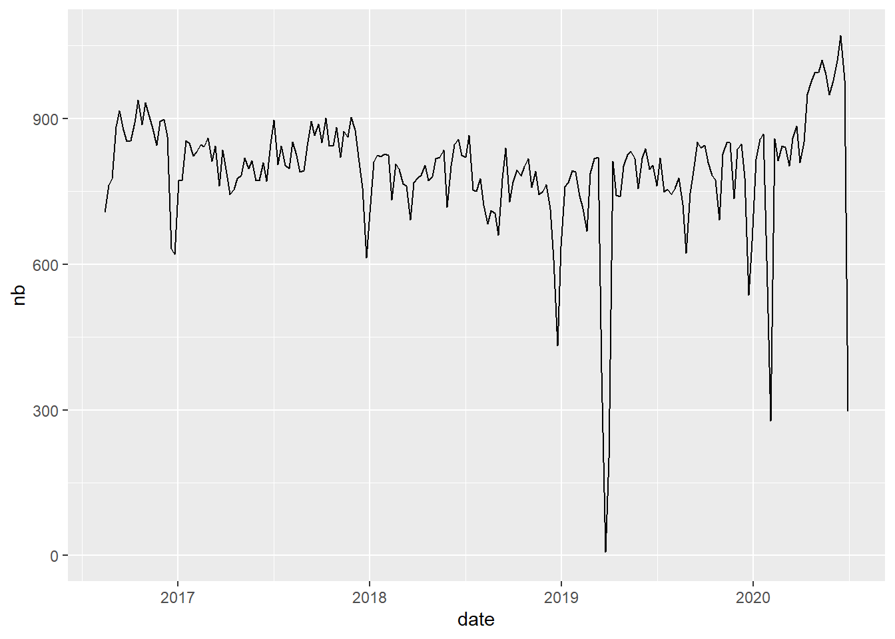

Chapter 3 Data Check and Clean
library(knitr)
knitr::opts_chunk$set(echo = TRUE, warning = FALSE, message = FALSE)
library(quanteda)
library(dplyr)
library(ggplot2)
library(tidytext)In this chapter, we describe the different operation of checking and cleaning that should be necessarily realized before any sound exploration of corpus. The majority of the procedures described here can not be done automatically and implies a human expertise at each step in order to control the results and propose remediations in case of problems.
3.1 Prerequites : quanteda (or tidytext)
The operations will be realized jointly with the two packages quanteda and tidytext. In the majority of case, we will use quanteda but in some specific situations tidytext will appear more adapted and will be used, thanks to (relatively) easy possibilities of exchange between the two format of dta storage of corpora.
- The reader non familiar with quanteda should have a look at Quick Start available on the website of the project :
https://quanteda.io/articles/quickstart.html
- The reader non familiar with tidytext will find detailed explnation in the following book :
https://www.tidytextmining.com/
We start by loading the corpus of news from The Guardian (UK) that has been transformed into quanteda corpus in the previous chapter (ref). we also transform the time variable in date and sort the news by historical order.
qd<-readRDS("_data/qd/en_GBR_guardi.Rdata")
qd$date<-as.Date(qd$date)
qd<-qd[order(qd$date)]
str(qd)## 'corpus' Named chr [1:160855] "20 great Ashes moments No1: Shane Warne's ball of the century, 1993 | Barney Ronay.\n.The Australian spinner’s "| __truncated__ ...
## - attr(*, "names")= chr [1:160855] "text117863" "text43964" "text149258" "text81406" ...
## - attr(*, "docvars")='data.frame': 160855 obs. of 4 variables:
## ..$ docname_: chr [1:160855] "text117863" "text43964" "text149258" "text81406" ...
## ..$ docid_ : Factor w/ 160855 levels "text117863","text43964",..: 1 2 3 4 5 6 7 8 9 10 ...
## ..$ segid_ : int [1:160855] 1 1 1 1 1 1 1 1 1 1 ...
## ..$ date : Date[1:160855], format: "2013-04-29" "2013-05-02" ...
## - attr(*, "meta")=List of 3
## ..$ system:List of 5
## .. ..$ package-version:Classes 'package_version', 'numeric_version' hidden list of 1
## .. .. ..$ : int [1:3] 2 1 0
## .. ..$ r-version :Classes 'R_system_version', 'package_version', 'numeric_version' hidden list of 1
## .. .. ..$ : int [1:3] 4 0 2
## .. ..$ system : Named chr [1:3] "Windows" "x86-64" "CIST"
## .. .. ..- attr(*, "names")= chr [1:3] "sysname" "machine" "user"
## .. ..$ directory : chr "C:/claude/git/newsbook"
## .. ..$ created : Date[1:1], format: "2020-07-10"
## ..$ object:List of 2
## .. ..$ unit : chr "documents"
## .. ..$ summary:List of 2
## .. .. ..$ hash: chr(0)
## .. .. ..$ data: NULL
## ..$ user :List of 8
## .. ..$ media_id : num 300560
## .. ..$ media_name : chr "The Guardian UK"
## .. ..$ media_url : chr "http://www.theguardian.com/uk"
## .. ..$ language : chr "en"
## .. ..$ media_country: chr "FRA"
## .. ..$ data_source : chr "Media Cloud "
## .. ..$ data_time : chr "Special extraction"
## .. ..$ data_author : chr "Elaborated by Claude Grasland"This structure of data appears a bit tricky at first glance (especially for old user of quanteda that has experimented modification between version 1 and 2 …) but it offers very good guaranties of quality and efficiency. As explained by the author of the quanteda package :
A corpus is designed to be a “library” of original documents that have been converted to plain, UTF-8 encoded text, and stored along with meta-data at the corpus level and at the document-level. We have a special name for document-level meta-data: docvars. These are variables or features that describe attributes of each document.A corpus is designed to be a more or less static container of texts with respect to processing and analysis. This means that the texts in corpus are not designed to be changed internally through (for example) cleaning or pre-processing steps, such as stemming or removing punctuation. Rather, texts can be extracted from the corpus as part of processing, and assigned to new objects, but the idea is that the corpus will remain as an original reference copy so that other analyses – for instance those in which stems and punctuation were required, such as analyzing a reading ease index – can be performed on the same corpus.
With the new data structure it is for example easy to extract a specific text from the corpus with an extractor, called texts(). We can also have an easy access to information associated to each document like the date in our example. For example the news 666 is defined by :
## text156682
## "The state pension top-up that no one seems to want.\n.More than a quarter of a million people were expected to boost their pension; fewer than 4,000 have signed up so farIt’s the great deal no one seems to know about. The government is running a scheme whereby older people can buy extra state pension on what experts say are “very favourable” terms – but the take-up so far has been shockingly low.The official prediction was that 265,000 people would take advantage of the chance to boost their retirement income by making an upfront payment. But figures published this week show that fewer than 4,000 signed up in the first six months. Here we explain how the scheme works, why you should do it, and things to watch out for. Continue reading..."## [1] "2016-08-20"For those who really don’t want to use quanteda, it is also simple to convert it to other format and in particular a simple data.frame where we can find only the id of document, the text and the document level information. But we have lost all the other information like the document metadata.
## doc_id
## 1 text117863
## 2 text43964
## 3 text149258
## 4 text81406
## 5 text104515
## 6 text9780
## text
## 1 20 great Ashes moments No1: Shane Warne's ball of the century, 1993 | Barney Ronay.\n.The Australian spinner’s drifting, leaping leg-break to bowl Mike Gatting at Old Trafford introduced the cricket world to a new heroThere shouldn’t really be anything left to say about Warne’s Ball, otherwise known as Shane Warne’s opening delivery in Ashes cricket; or more commonly as The Ball of the Century, Birth of A Superstar, Awakening of the Kraken, the Jailhouse Rock of Australia’s custard-blond leg-break Elvis, and so on ad infinitum.In part this is simply because so much has already been said and written, an entire vast, groaning medieval library of ball talk, from the historian’s cold-eyed anatomy to the biographer’s partisan gurgles. And partly because the ball itself has become so enmeshed in its own mille-feuille of well-worn superlatives that there is a fear the moment itself has also become a cliche, a mini-industry of middle-aged hyperbole, asserting its own wonderfulness more insistently with each receding year. Perhaps Warne’s Ball might even have begun to look a bit like Warne himself these days: waxworked and framed, glistening with the acquired privilege of athletic celebrity and generally hanging around the place being oppressively eminent long after its own meaningful cricketing life has ended. Continue reading...
## 2 20 great Ashes moments No2: the miracle of Cardiff, 2009 | Rob Bagchi.\n.Spectators who dared to look did so through their fingers as Monty Panesar and Jimmy Anderson held on for a drawIt is to Britain’s martial and imperial past that the metaphors for a home team’s defiance of overwhelming odds still habitually turn when honour, even in retreat, is salvaged from a seemingly inevitable ignominious fate. Dunkirk and its fabled spirit, a cornered belligerence and breezy fortitude in the face of imminent catastrophe, is the most common analogy but for England’s draw with Australia in the opening match of the 2009 Ashes series, something more symbolically Welsh was required to commemorate Cardiff and the country’s first ever Test.For the generations brought up on the annual televised screening of the 1964 film Zulu, the Battle of Rorke’s Drift and specifically the poignant if apocryphal singing of Men of Harlech by a hopelessly outnumbered company of the 24th Regiment of Foot valiantly defending their position and lives against 4,000 warriors, suggested the obvious soundtrack to the highlight reels of Sunday at the Swalec Stadium. Continue reading...
## 3 The Joy of Six: red mist in football | Scott Murray and Rob Smyth.\n.Frank Rijkaard and Rudi Völler bond during West Germany's match against Holland at Italia 90. Photograph: Getty Images
## 4 Official World Cup balls: a potted history – in pictures.\n.Since 1970, Adidas have had the honour of producing the official match balls for the World Cup finals. With the announcement for the Telstar 18 for 2018 Russia, we take a look back at the balls that have graced the finals over the past 43 years Continue reading...
## 5 Weather view: photos of this week's weather – by readers around the world.\n.We’re looking for your best beautiful and striking weather-related photos. From cloudy skies to glorious sunshine, share your pictures of this week’s weather and we’ll choose a selection to be printed in the paperFrom heatwaves in Australia, to snow in the US and Middle East, to storms and flooding in the UK, you’ve shared some dramatic images with the Guardian. But the weather doesn’t have to be extreme to make a great picture. Wherever you are in the world, we’d love to see your most striking photos of this week’s weather.In your description, please tell us where you took the photo (it can be anywhere in the world) and the date you took it (it should be in the last week). Continue reading...
## 6 The Joy of Six: football pantomime villains | Paul Doyle.\n.From the loathing for Pepe’s playacting to the puzzling rancour Michael Owen inspires, football fans love to hate a bad guyA distinction must be drawn between “football pantomime villains” and real-life villains associated with football, such as Uday Hussein, Robert Maxwell or Lee Hughes, men who have committed misdeeds too grave for any enjoyment to be had from contemplating them. Continue reading...
## date
## 1 2013-04-29
## 2 2013-05-02
## 3 2013-11-29
## 4 2013-12-03
## 5 2014-01-13
## 6 2014-04-183.2 CHECK 1 : length of texts
We can use the summary command applied to the whole corpus in order to obtain for each text the number of sentences and words. This operation can take some time because quanteda will proceed to a tokenization of the corpus. We suggest to store this information in the quanteda object.
# Compute number of sentences and tokens
tokeninfo <- summary(qd,length(qd))
#store in quanteda object
docvars(qd, field="Tokens")<-tokeninfo$Tokens
docvars(qd, field="Sentences")<-tokeninfo$Sentences
# Visualize
head(docvars(qd))## date Tokens Sentences
## 1 2013-04-29 234 5
## 2 2013-05-02 202 4
## 3 2013-11-29 37 3
## 4 2013-12-03 67 3
## 5 2014-01-13 156 6
## 6 2014-04-18 85 33.2.1 Number of sentences
We examine the number of sentences of texts
## Min. 1st Qu. Median Mean 3rd Qu. Max.
## 1.000 3.000 4.000 5.694 7.000 204.000The distribution appears strongly asymmetric with a majority of news with 3 to 7 sentences but a minoity with much longer size. We can zoom on the news with less than 20 sentences for a better view of the distribution :

At this point, it could be useful to proceed to an harmonisation of the length of texts with two possibles options :
- delete the news with too much sentences
- keep only the k first sentences of each text with the corpus_reshape function.
But we do not want here to anaticipate on what will decide the user so we let the issue open.
3.2.2 Number of tokens
## Min. 1st Qu. Median Mean 3rd Qu. Max.
## 12.0 101.0 127.0 146.5 179.0 3362.0 We observe the same asymmetry for the number of tokens. In the ajority of case, the number of tokens is comprise between 100 and 180 Tokens but the minimum is 12 and the maximum 3362.
We observe the same asymmetry for the number of tokens. In the ajority of case, the number of tokens is comprise between 100 and 180 Tokens but the minimum is 12 and the maximum 3362.
p<-ggplot(docvars(qd2),aes(x=Tokens))+geom_histogram(stat_bin=25)+scale_x_continuous(lim = c(0,300))
p
3.3 CHECK 2 : Time distribution
The second step is to verify the stability of the news through times, in terms of frequencies. The main danger here is the risk to observe discontinuities in the distribution which could induce biases in the comparison of evolution through time.
3.3.1 News without date
After a check of the time distribution of news, we eliminate 22 news without date
## Min. 1st Qu. Median Mean 3rd Qu. Max.
## "2013-04-29" "2017-07-22" "2018-07-04" "2018-07-19" "2019-07-25" "2020-06-30"
## NA's
## "22"3.3.2 Distribution of news through time
We introduce a function when_count for an easier extraction of time series with different levels of time span. The interest of this function is to add zero value for time period where no news has been observed, which would not be the case with a simple table function.
#### ---------------- when_count -----------------
#' @title identify number of news per time period
#' @name when_count
#' @description count the numbers of news per time period and add zero for missing period
#' @param corpus a corpus of news (in qd format) with a column "time"
#' @param span a time period of aggregation (days, weeks, months, year)
when_count<-function(corpus = qd, span = 'weeks' )
{
# corpus<-qd
# span<-"weeks"
time<-docvars(corpus,"date")
tab<-tibble::tibble(date=as.Date(time))
item_date <- tab %>%
group_by(date = cut(date, span, start.on.monday = TRUE)) %>%
summarise(nb = n())
item_date$date <- as.Date(item_date$date)
all_date<-data_frame(date=seq(min(as.Date(item_date$date)),max(as.Date(item_date$date)),span))
tem_date<-left_join(all_date,item_date)
item_date$nb[is.na(item_date$nb)]<-0
return(item_date)
}3.3.2.1 daily distribtion
news_by_day<-when_count(qd,span="days")
p<-ggplot(news_by_day, aes(x=date, y=nb)) + geom_line()+ scale_y_continuous(limits=c(0,max(news_by_day$nb)))
p We discover here that, despite the fact that the first news is observed the 29 April 2013, it is only after the 15th August 2016 that the flow of news become regular with an average level of 100 news per day. Therefore we reduce the sample to this period :
We discover here that, despite the fact that the first news is observed the 29 April 2013, it is only after the 15th August 2016 that the flow of news become regular with an average level of 100 news per day. Therefore we reduce the sample to this period :
qd<-corpus_subset(qd,qd$date>as.Date("2016-08-14"))
news_by_day<-when_count(qd,span="days")
p<-ggplot(news_by_day, aes(x=date, y=nb)) + geom_line()+ scale_y_continuous(limits=c(0,max(news_by_day$nb)))
p For the new period, we can say that the flow is relatively regular, with very few discontinuities corresponding to zero news during one or several days.
For the new period, we can say that the flow is relatively regular, with very few discontinuities corresponding to zero news during one or several days.
3.3.2.2 weekly distribtion
news_by_week<-when_count(qd,span="weeks")
p<-ggplot(news_by_week, aes(x=date, y=nb)) + geom_line() + scale_y_continuous(limits=c(0,max(news_by_week$nb)))
p The analysis by week reveals a clear perturabation during the weeks of 23 March 2019 and 3 February 2020. The other decline observed at the end of the years 2016, 2018, 2019 and 2020 are not related to problems of data collection but rather to a reduction of the activity of journalist between X’mas and New Year.Surprisingly, this decline is not observed at the end of the year 2017. The final decline is related to the fact that the final week starting the 29 June 2020 is not complete because colection stopped the 30 june 2020.
3.4 CHECK 3 : Suspect words
A classical problem with the news collected from RSS is the existence of sequence of words that are not related to news itself but to newspaper structure. For example, the systematic addition of a copyright ((c) the Journal) or the introduction of references (See also) and many other things that can be considered as external to the message provided by the news itself. Here they are no miracle solution that can produce an automatic correction. But some technics can help the analyst to simplify the task of correction.
3.4.1 Tips 1 : simple word fequencies
A simple analysis of most frequent tokens can help to discover suspect words.
toks<-tokens(qd, remove_numbers = TRUE, remove_punct = TRUE, remove_separators =TRUE)
dfm <- dfm(toks, remove = stopwords("english"))
top10<-textstat_frequency(dfm,n=10)
kable(top10)| feature | frequency | rank | docfreq | group |
|---|---|---|---|---|
| continue | 163448 | 1 | 160774 | all |
| reading | 163079 | 2 | 160774 | all |
| new | 48053 | 3 | 33788 | all |
| one | 46204 | 4 | 35371 | all |
| first | 36064 | 5 | 27215 | all |
| people | 34901 | 6 | 24858 | all |
| us | 34458 | 7 | 23278 | all |
| said | 31615 | 8 | 26348 | all |
| years | 29787 | 9 | 23763 | all |
| world | 28968 | 10 | 20442 | all |
The simple examination of the top 10 reveals the existence of two suspect words continue and reading. They can be explained by the existence of the string Continue Reading at the end of the majority of news. For example :
## text91459
## "Liverpool have been rebuilding … so why is Alberto Moreno still at left-back?.\n.The Spanish defender was exposed on numerous occasions against Arsenal and looks a clear weak link in a squad that Jürgen Klopp has otherwise strengthenedLiverpool started their season in triumphant fashion on Sunday with a 4-3 win at the Emirates that included two amazing goals from Philippe Coutinho (if we think he meant to score the second off his shin), a stunning strike from Sadio Mané and some, shall we say, inconsistent defending by the left-back Alberto Moreno. Related: Liverpool and Coutinho stun stuttering Arsenal in seven-goal thriller Continue reading..."3.4.2 Tips 2 : most frequent n-grams
Another approach consist in the extraction of most frequent n-grams i.e. couples of words frequently associated. This can be done with various value of n. But it is generally sufficient to check for n= 2, 3 or 4.*
bigram<-tokens_ngrams(toks,n=c(2))
dfm2<-dfm(bigram)
top10<-textstat_frequency(dfm2,n=10)
kable(top10)| feature | frequency | rank | docfreq | group |
|---|---|---|---|---|
| continue_reading | 160775 | 1 | 160774 | all |
| of_the | 114191 | 2 | 72929 | all |
| in_the | 99843 | 3 | 67796 | all |
| to_the | 46934 | 4 | 38313 | all |
| on_the | 40855 | 5 | 33645 | all |
| for_the | 33354 | 6 | 28210 | all |
| at_the | 32413 | 7 | 27309 | all |
| in_a | 32264 | 8 | 27635 | all |
| to_be | 30879 | 9 | 25535 | all |
| of_a | 29399 | 10 | 25276 | all |
Here, the conclusion is clear concerning our usual suspect. We can therefore proceed to the elimination of the problem with a regular expression
3.5 CHECK 4 : Human expertise
All the previous check can not replace human expert. Therefore, we strongly suggest to examine a random sample of texts extract from the news in order to have an empirical view on the texts that will be further subject to time consuming analysis. It is certainly not a vaste of time to discover issues early and avoid to replicate the whole work (pity for the climate !).
A random sample of news can be easily extracted with corpus_sample function. Let’s take a sample of 10 here (but 100 would be certainly better)
## text119206
## "Britain's contaminated blood scandal: ‘I need them to admit they killed our son’.\n.In the 1970s and 80s, 4,689 British haemophiliacs were treated with contaminated blood products. So far, more than half of them have died. The government knew there were risks involved. The patients didn’t. Will they ever get justice?It has been called the biggest treatment disaster in the history of the NHS, and a “horrific human tragedy”. But Su Gorman, whose husband has endured years of ill health as a result of haemophilia treatment, does not believe this adequately describes Britain’s contaminated blood scandal. As far as she is concerned, it is simply a crime.In the 1970s and 80s, 4,689 haemophiliacs became infected with hepatitis C and HIV after they were treated with contaminated blood products supplied by the NHS. Of those infected, 2,883 have since died. Continue reading..."
## text138656
## "London cycle courier 'was punished for refusing work after eight hours in cold'.\n.Andrew Boxer is latest worker to launch tribunal case after he was not entitled to holiday pay, sickness benefit or pensionA cycle courier delivering parcels in central London has described being punished for refusing work after eight hours of cycling in snowy weather, saying he received no paid breaks or holiday pay.Andrew Boxer is the latest to take on the battle to be classified as a “worker” rather than an independent contractor. Continue reading..."
## text34686
## "Experimental music's reliance on Facebook is counterintuitive – but there are alternatives.\n.While Facebook has fostered open communities in alternative music, they can disappear with a tweak of an algorithm. Fortunately, non-corporate marketing tools are emergingIn the mid-90s when I first put on club nights in Leeds, I’d wake up far earlier than my student routines demanded and spend hours stapling rudimentary photocopied posters to the trees that lined the main route to campus. I knew they’d be removed by the end of each day, but if I could just get the message out to a university’s worth of bleary-eyed students each morning we might just manage to assemble an audience at the other end of the night.It was the closest we ever got to a targeted advertising campaign, the likes of which Trump, leave.eu, and seemingly every political party uses Facebook for these days. The good thing was we didn’t have to steal any data to do so; the downside was we had no idea who was coming until the night. Our posters were a one–way broadcast with no satisfying feedback loop reassuring us of success. So it’s no wonder that now I’ve graduated to running Borealis, a multi-venue Norwegian experimental music festival, the Facebook event page and all the advertising potential that comes with it has become one of the mainstays of our event marketing, and a more convenient, and arguably more effective, platform for building audiences than those early morning staple gun sorties. Continue reading..."
## text73929
## "Coventry drivers could get £3,000 transport vouchers for ditching cars.\n.Pilot project will offer people vouchers for public transport, taxis or car clubsDrivers in Coventry could be paid up to £3,000 a year in transport vouchers to ditch their cars under a UK-first scheme.The Transport for the West Midlands (TfWM) pilot project is designed to ease traffic congestion and improve air quality in the city. Continue reading..."
## text46257
## "Why speaking Spanish is becoming dangerous in America.\n.Reports of people being berated or attacked while communicating in the world’s second most spoken language are on the riseSandy was trying to communicate with a colleague. Although her presence was unusual as a Latinx lawyer at a top southern California non-profit, she was used to talking to people in any language she wanted to. After all, she’d graduated from a top law school and worked near her Los Angeles-area, Latin-centric hometown.But this time was different. She was speaking to a member of the custodian staff in Spanish about a trivial matter when an older white female executive forcefully told her to stop. That she should not socialize in another language because “other people” might think they were talking trash about them. Continue reading..."
## text61329
## "Uber aims for stock market debut value of up to $90bn.\n.It would be highest valuation for US tech company since Facebook floated in 2012Uber is set to unveil the terms of its hotly anticipated stock market flotation, with the ride-hailing service targeting a valuation of $80bn to $90bn – substantially less than bankers had suggested the business could be worth but still the highest valuation for a US tech company since Facebook floated in 2012.The 10-year old company, which recently warned it may never “achieve profitability”, is expected to release documents on Friday outlining details of its initial public offering, including the number of shares to be sold and the proposed price range. Continue reading..."
## text10875
## "Everyone in Welsh care homes to be offered coronavirus tests.\n.Move follows scientific advice and brings country in line with England, says health ministerCoronavirus – latest updatesSee all our coronavirus coverageEveryone in care homes in Wales will be able to get a coronavirus test, the Welsh government has said.The health minister, Vaughan Gething, said the change follows the latest scientific advice and brings Wales in line with England. The move means every care home in Wales will have access to testing and be able to order online kits for residents and staff. Continue reading..."
## text61704
## "Could the coronavirus mutate if a vaccine can't be found in time?.\n.As scientists race to trace out paths the virus might take we ask the crucial questionsIn just a month, the coronavirus outbreak has snowballed from a handful of cases to more than 40,000, reaching four continents and prompting an all-out battle to stop the spread across China and beyond. As those in Wuhan face shortages of hospital beds and supplies that have been likened to “wartime conditions”, experts and scientists are attempting to trace out the possible paths that the virus might take. Continue reading..."
## text978
## "‘You want to shout: Stop saying that! Look at your own school funding figures!’.\n.What makes a quiet and successful headteacher challenge the government and write to 2.5m families about the unfairness of school funding?It’s Saturday morning and Jules White is up early, running the family dogs along the beach before accompanying one of his two teenage daughters to a race walking session. He does the wiggly-hips sport to keep his daughter company, he says, but it’s also a good distraction because the concentration needed to keep one foot on the ground at all times keeps his mind off a more pressing problem – school funding.White is the secondary headteacher who stuck his head above the parapet and started what could prove to be the most effective grassroots campaign in the history of British education. For the last two years he has led the Worth Less? campaign, joined by 4,000 other heads all speaking out about the funding system that leaves their schools millions of pounds out of pocket compared with others in different parts of the country. They recently wrote to 2.5m homes to tell parents about school cash shortages. Continue reading..."
## text23000
## "Where to get a drink for under $20 in Las Vegas.\n.In the deserts of Nevada, there are plenty of watering holes to quench your thirst that won’t leave you out of pocketAlthough it may seem as if Las Vegas is all about extravagance – you can pick up a cocktail here for $10,000 should you so wish – there are a vast array of drinking options on offer throughout the city, from dive bars to affordable cocktail establishments to glittering hotels. On or off the Strip, there’s a beverage with your name on it.CommonwealthA 558 sq metre (6,000 sq ft) cocktail bar full of prohibition-era personality. It attracts a youngish crowd that come for the reasonably priced drinks (cocktails from $9) and regular dance parties. There’s a rooftop bar with a DJ and views of Fremont Street, and the basement houses a “secret” speakeasy, the Laundry Room, an intimate space that requires booking (by text message only).525 E. Fremont St Continue reading..."The sample appears correct but some corrections could be added. We could for example eliminate the double quotes that will complicate the analysis of text. We could also decide to eliminate the final sentences that are not completed, etc. But it can also be important to keep the text as similar as possible to the initial one and to delay these final check to the next chapter where the data will be focused on a specific question.
The last step here is to store the clean file for further use. Here we use the initial name but with adding information on the period of coverage.